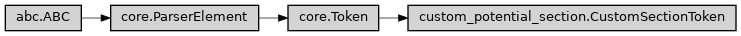

CustomSectionToken
- class ase2sprkkr.potentials.custom_potential_section.CustomSectionToken[source]
The grammar for a custom section - i.e. for unknown section, whose content is let as is.
The grammar just reads all up to the section separator.
Class hierarchy
Constructor
- __init__()
- pattern = re.compile('\n[*][*][*][*][*][*][*][*][*][*][*]*[ \r\t]*\n', re.DOTALL)
- name = 'EndOfSection'
- _abc_impl = <_abc._abc_data object>